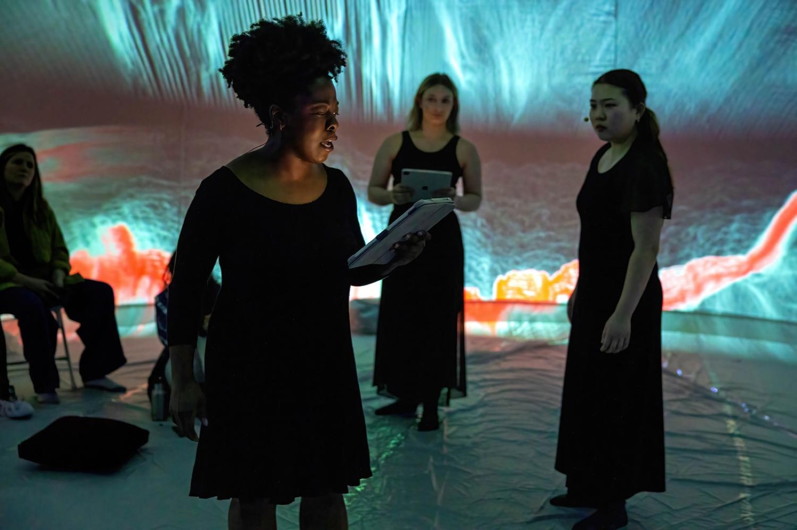
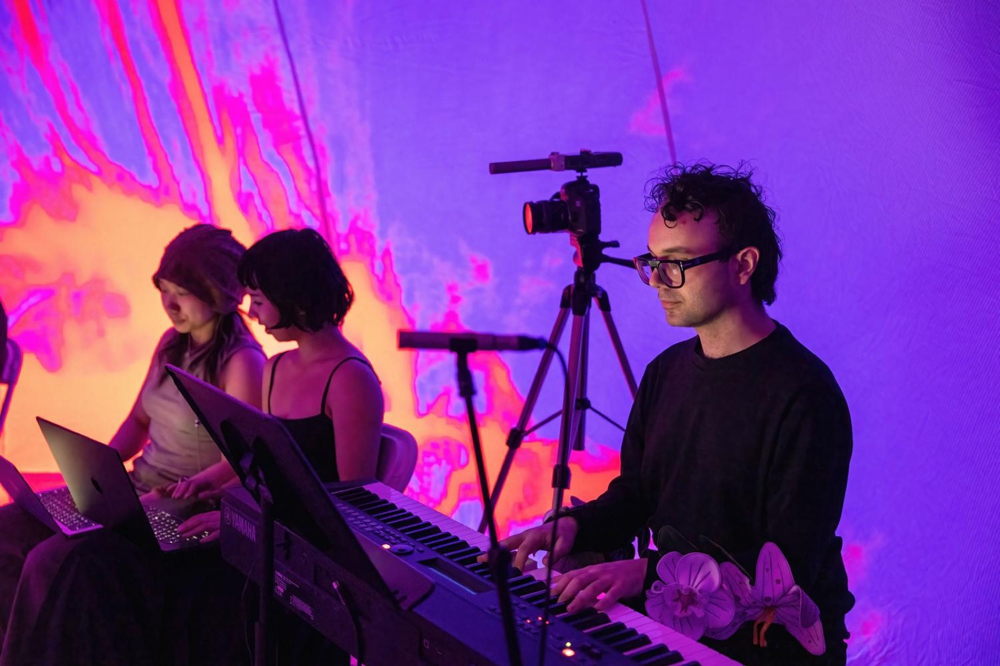

Heretic
Heretic is an experimental live opera experience, created in collaboration between musical and visual artists. Performed inside an inflatable dome, the work combines live piano, singing, and audio-reactive visuals to immerse the audience in a haunting narrative.
Set in a deep forest, the opera tells the story of Mara, a woman accused of witchcraft; the Justiciar, her persecutor; and Ember, the embodiment of fire. Their tense interplay unfolds within a space where light, voice, and sound converge.
The visuals—minimal, upward-moving, and responsive to the singers’ vocal registers—evoke the chaotic force of fire without overshadowing the performers. Each character is distinguished through shifting color palettes and textures, culminating in a fiery climax of red and yellow.
Heretic reflects on historical witch trials while pointing to the persistence of unjust accusations in the present. Within the dome’s enveloping environment, the work transforms persecution into an immersive act of resistance and remembrance.


Software used: Touchdesigner, Isadora, NDI, Dome Projection
Visual Artists: Qiyun (Q) Gao, Jiawen Wang
Composers: Josh Belperio, Thomas Blakeley
Vocalists: Mayu Sierra Tayama, Emma Zanetti, Sadiyah Babatunde